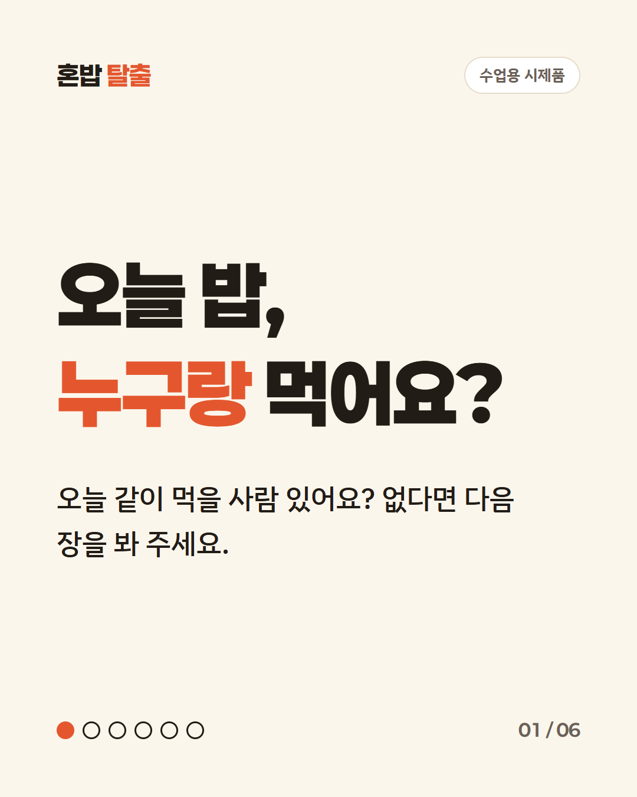
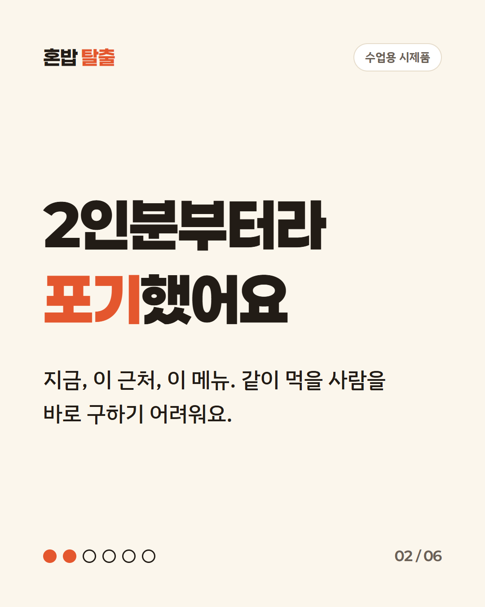
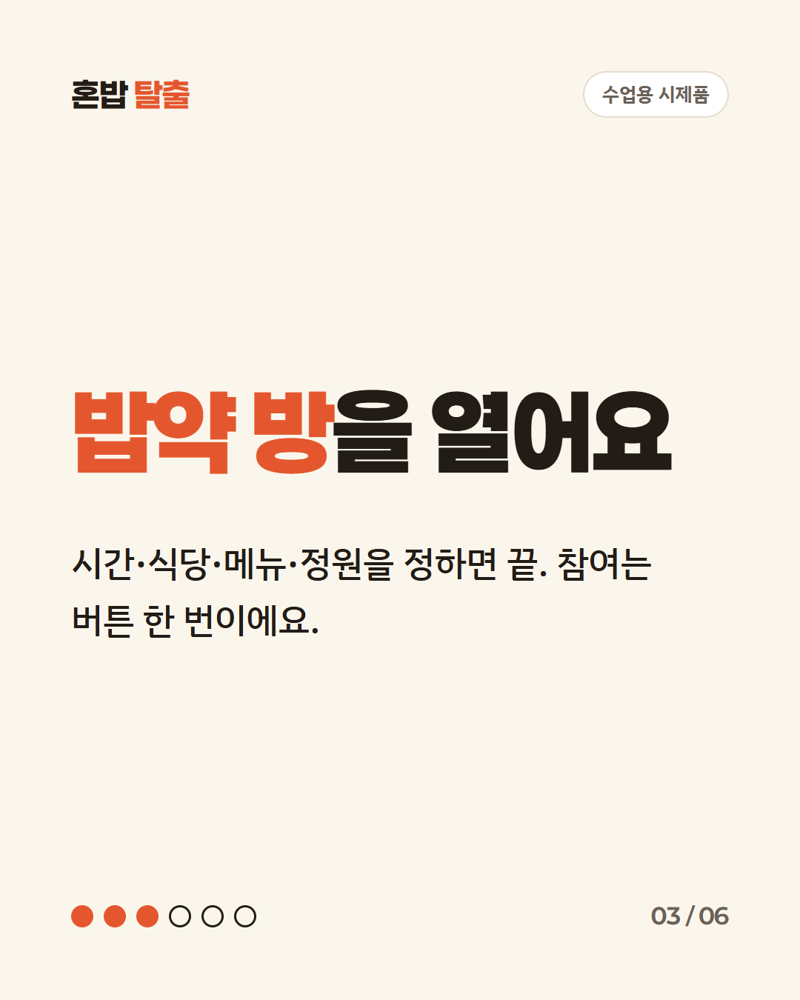
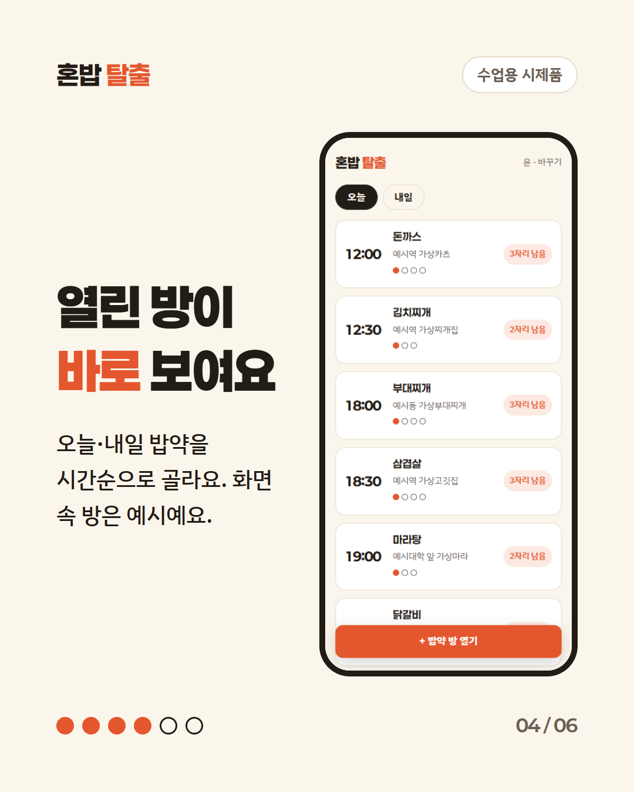
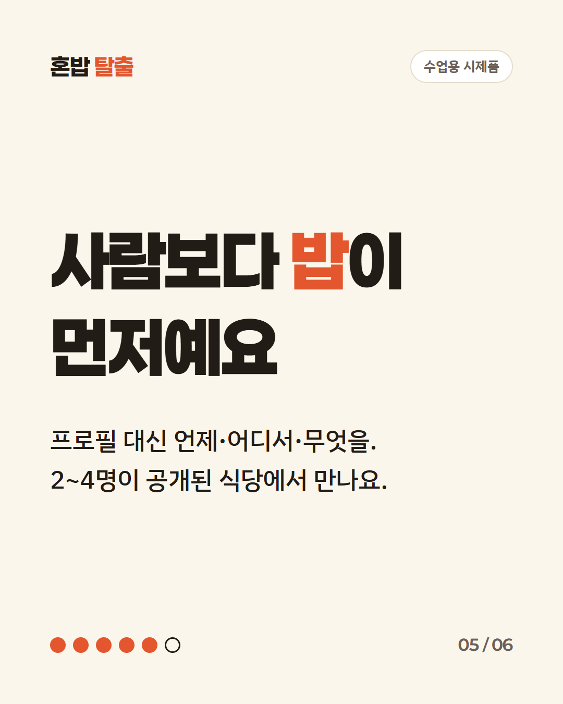
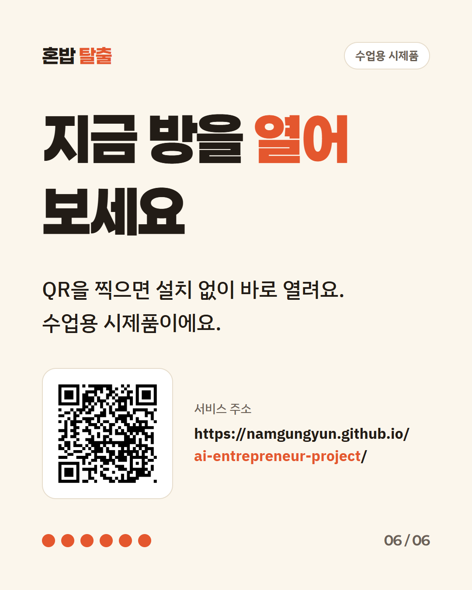
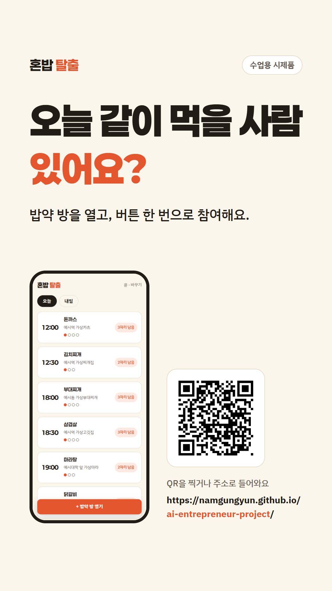

혼밥 탈출 홍보물 미리보기
수업용 시제품카드뉴스 6장, 스토리 1장, 캡션, 30초 숏폼 대본. 서비스 주소: https://namgungyun.github.io/ai-entrepreneur-project/
카드뉴스 (1080×1350)






스토리 (1080×1920)

캡션
캡션 1안 (질문형)
오늘 같이 먹을 사람 있어요?
2인분부터 주문되는 메뉴, 혼자라서 포기한 적 있다면 밥약 방을 열어 보세요.
시간·식당·메뉴·정원(2~4명)만 정하면 되고, 참여는 버튼 한 번이에요.
수업용 시제품이에요. 프로필 링크나 QR로 들어와 보세요.
https://namgungyun.github.io/ai-entrepreneur-project/
캡션 2안 (설명형)
혼밥 탈출은 사람 프로필이 아니라 "언제·어디서·무엇을"이 먼저인 밥약 서비스예요.
1. 오늘·내일 열린 밥약 방을 바로 봐요.
2. 마음에 드는 방에 버튼 한 번으로 참여해요.
3. 방 안 채팅으로 만날 곳을 정해요.
2~4명이 공개된 식당에서 만나요. 수업용 시제품이라 설치 없이 주소로 바로 열려요.
https://namgungyun.github.io/ai-entrepreneur-project/
캡션 3안 (짧게)
오늘 밥, 누구랑 먹어요?
밥약 방을 열면 같이 먹을 사람이 버튼 한 번으로 들어와요.
수업용 시제품이에요. QR을 찍어 보세요.
https://namgungyun.github.io/ai-entrepreneur-project/
해시태그 (10개)
30초 숏폼 대본
세로 9:16. 화면에 나오는 방은 모두 예시 데이터이고, 모든 장면에 '수업용 시제품'을 작게 띄운다.
| 장면 | 화면 | 자막 | 대사 |
|---|---|---|---|
| 1 (0~4초) | 밥공기색 바탕에 큰 글자만 | 오늘 같이 먹을 사람 있어요? | 오늘 같이 먹을 사람 있어요? |
| 2 (4~9초) | 휴대폰을 든 손. 메뉴를 고르다 멈춘다 | 2인분부터라 포기했어요 | 먹고 싶은 메뉴가 2인분부터라 포기한 적 있죠. |
| 3 (9~14초) | 혼밥 탈출 방 목록 화면 (예시 데이터) | 열린 밥약 방이 바로 보여요 | 혼밥 탈출을 열면 오늘·내일 밥약 방이 바로 보여요. |
| 4 (14~19초) | '밥약 방 열기'를 눌러 메뉴·식당·시간·정원을 넣는다 | 시간·식당·메뉴·정원만 정해요 | 방을 여는 것도 간단해요. 네 가지만 정하면 돼요. |
| 5 (19~24초) | 다른 휴대폰에서 참여하기를 누르고 채팅이 오간다 | 참여는 버튼 한 번 | 참여는 버튼 한 번, 만날 곳은 방 안 채팅으로 정해요. |
| 6 (24~27초) | 큰 글자 화면 | 2~4명이 공개된 식당에서 | 2~4명이 공개된 식당에서 만나서 부담이 적어요. |
| 7 (27~30초) | 혼밥 탈출 글자와 QR, 서비스 주소 | QR로 바로 열어 보세요 · 수업용 시제품 | 수업용 시제품이에요. QR로 바로 열어 보세요. |